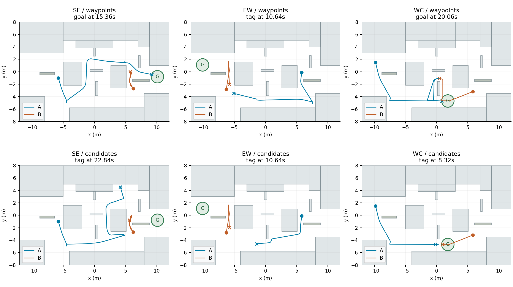
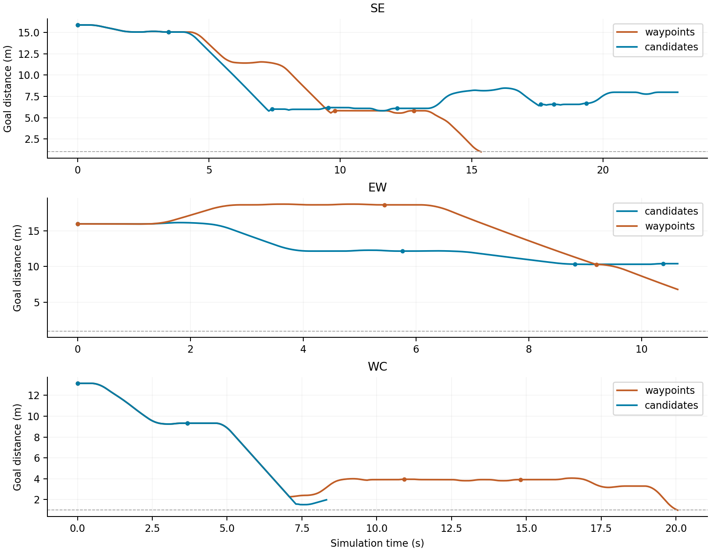

原始结构化决策 JSON
这里展示模型最终输出中的 assessment 简要依据，原文保留；不是完整内部思维链，也不保证其陈述正确。
FULL MATCHES / RECORDED DECISIONS
一个固定目标，一颗烟。四足必须利用信息和掩体到点；人形命中四足则防守成功。这里保留三种布局、两种规划架构的六局完整结果。
蓝色四足 A · 橙色人形 B · 绿色固定目标 G。CPU 运动学裁判执行，Isaac Sim 原生渲染保存轨迹；此全场镜头及人形锁定状态仅供事后审阅，未提交给模型。回放按仿真时间，省略模型调用期间的时停等待。
下载完整 MP4 · 终局截图这里展示模型最终输出中的 assessment 简要依据，原文保留；不是完整内部思维链，也不保证其陈述正确。
加粗为模型选中路线；风险只使用当时合法敌情，并假设参考敌位暂时不动。模型收到结构化路线卡，没有收到这张图；不是对未来安全性的保证。
每种布局分别运行一次路点拼接组和完整候选路线组。路点组让模型选择路点顺序；候选组由算法生成多条到目标的完整路径，再让模型选路线 ID、姿态和接触响应。两组均使用官方 DeepSeek Flash 的 LOW 思考配置。
| 对局 | 架构 | 终局 | 仿真时间 | 决策数 | API 总用时 | tokens |
|---|
API 用时包含网络、服务端等待和生成时间，不是纯思考时间；token 数含推理 token。提前失败不能解释为完成效率更高。每个条件仅一局，不估计稳定胜率、不宣称统计显著。
模型确实选过较长绕行并续接原路线，但胜负结果没有改善。新候选执行器未继承原单目标技能的合法观测局部绕避，因此不是局部执行能力完全相同的纯接口比较。

上排为路点组，下排为候选组。全局人形轨迹只用于事后分析。

额外离线诊断固定 WC 候选局前两步输出，只接回原局部绕避：双方碰撞停步均从 8 次降为 0 次，但仍在 10.86 s 失败。这不是第七局模型测试，也不能据此声称修复后能够获胜。
离线诊断原始记录| 设置 | 实际生效内容 |
|---|---|
| 场地与目标 | A3.9.1，24 × 16 m；墙体固定，关闭坍塌。唯一目标 G 半径 1 m，不刷新。 |
| 胜负 | 60 s 内四足中心入圈即赢，无驻留计分；人形有效标记四足或超时则四足失败。同一 20 ms 刻度入圈与被标记判平。 |
| 四足标记人形 | 只令其失能 1 s，不淘汰；标记后冷却 4 s。此赛制不使用旧赛制的 3 HP。 |
| 标记判定 | 当前合法可见，8 m 内、正前总 60°且实际跟踪误差 ≤5°，射手速度 ≤0.15 m/s；连续满足 1 s 后命中。被射击目标移动不自动打断锁定。 |
| 观测 | 四足全向 360°、人形正前 180°，双方视距不限；三维代表点与墙/烟求交。四足记忆 4 s，人形缓存 12 s。模型知道地图和人形初始位置，不知道隐藏位置、巡逻段或内部锁定计时。 |
| 运动 | 四足直立 3.2 m/s、低姿态 1.2 m/s；代表点高 0.40 / 0.24 m，切姿态 0.4 s。人形 0.975 m/s、代表点高 1.05 m。有加减速、转向和碰撞约束。 |
| 烟雾 | 一颗，投掷 ≤6 m，半径 2 m、高 2.5 m；停稳施放 0.35 s，延迟 0.4 s，持续 5 s。双向遮蔽，不挡移动、不提供无敌；投掷在 z=1 m 检查直线遮挡。 |
| 人形策略 | 合法发现后反应并追踪瞄准；失联后短时盯最后位置 1.2 s，再靠近搜索，主动搜索分支持续至信息年龄 8 s，然后回巡逻。不是全知追踪。 |
| 模型与执行 | DS LOW；事件触发 4～8 s 技能计划，底层 50 Hz 执行，调用时仿真时停。最多传最近 4 个动作，不追加前轮 assessment 或完整推理。 |
两组共享修复了探身接近阶段的撤退判定、人形路径转角和四足受阻后退。候选组另加入完整路径选择和续接，但保留了已披露的执行缺口。这里的回放使用 v0.5 实验记录；仓库 v0.4.1 引擎不能直接重演成相同轨迹。
本目录是轻量展示包。视频保留每局从开始到终局的全部原生 GIF 帧，按 12 fps 转码；截图压缩为 JPEG。未重新运行策略或模型。打开本地 index.html 即可浏览，不连接外部脚本、字体或 API。
保留系统提示词、逐步合法观测、原始最终输出、调用起止时间、用量回执、配置和来源哈希。未收录完整内部推理、50 Hz 原始轨迹、v0.5 运行引擎、USD、模型或贴图缓存。
各局 trial_config.json 保留历史 base 字段；有效固定目标规则以 rules 和系统提示词为准。旧 HP、循环点与坍塌字段未在本轮启用。result.json 的 condition 字段是历史适配器标签，架构以 arm 和规则版本为准。